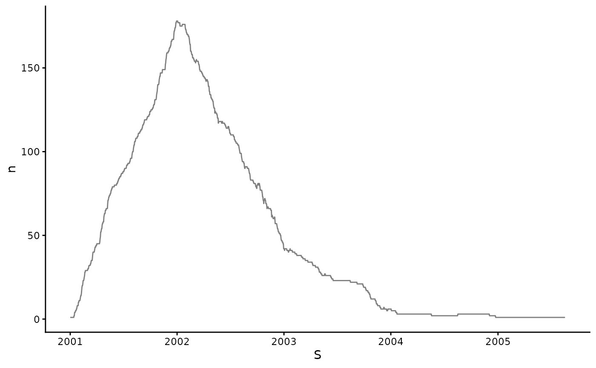
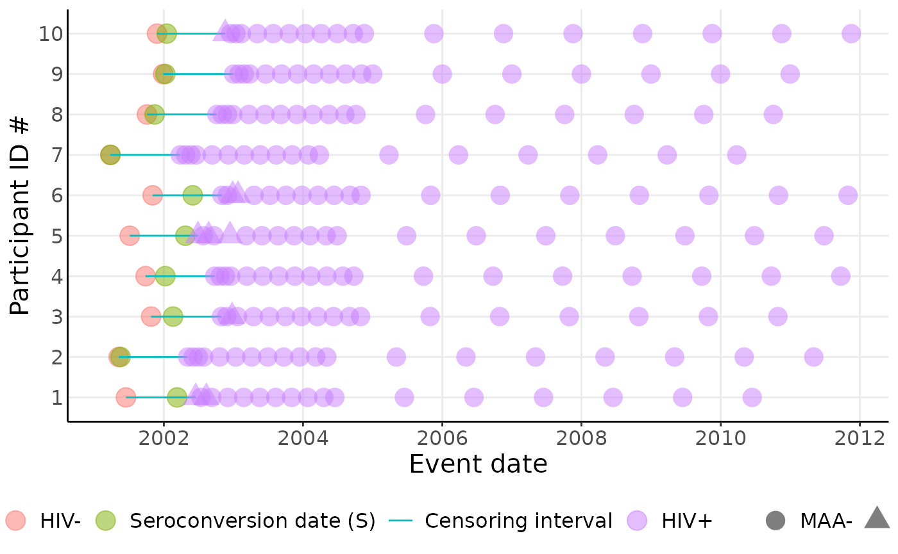
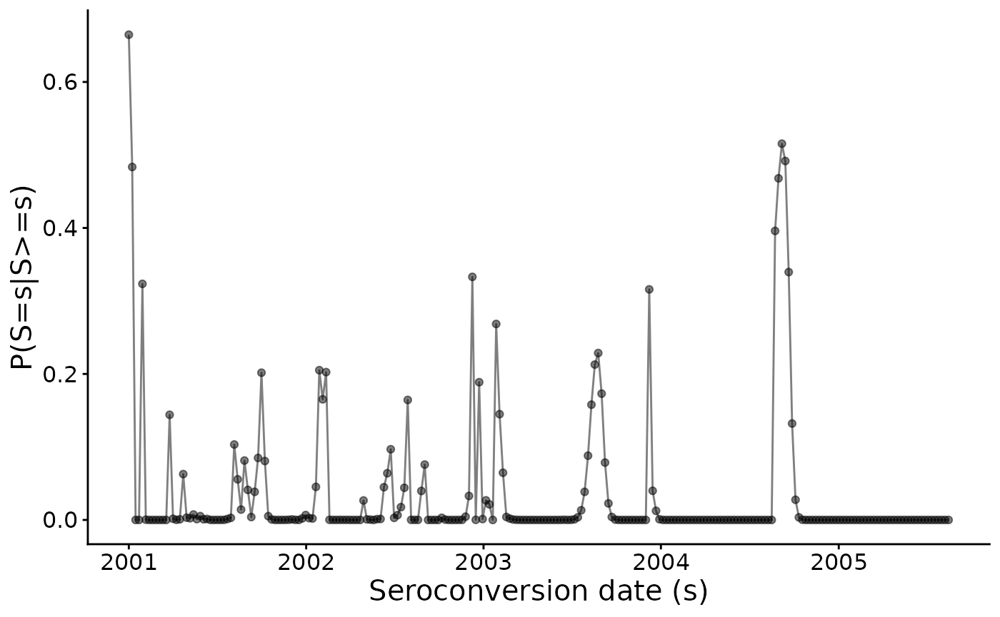
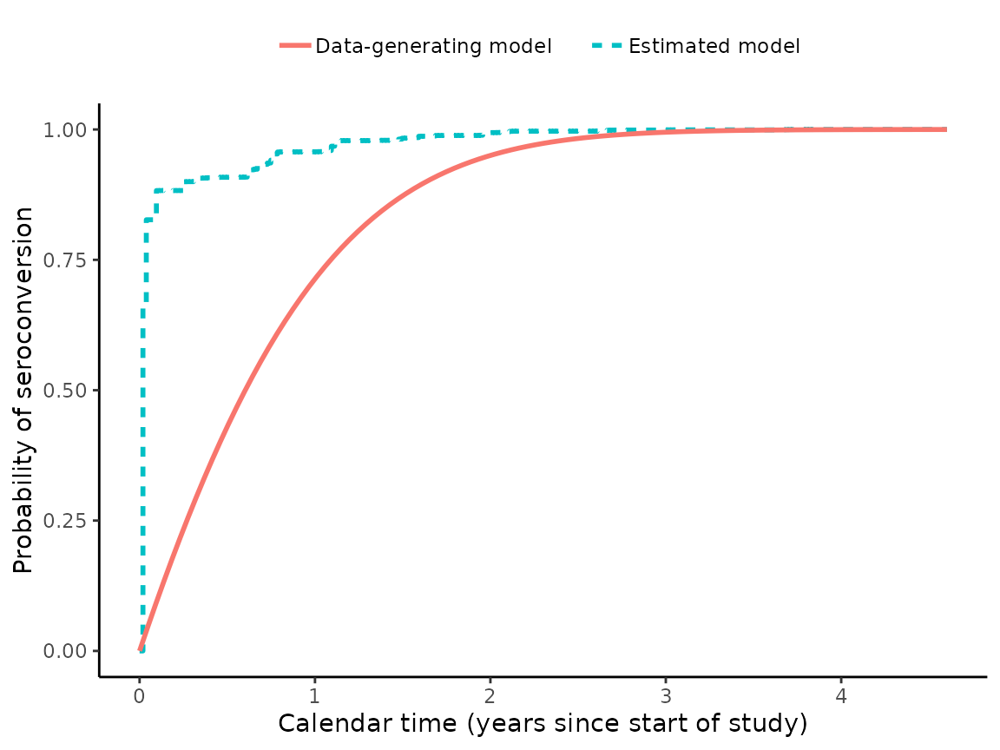
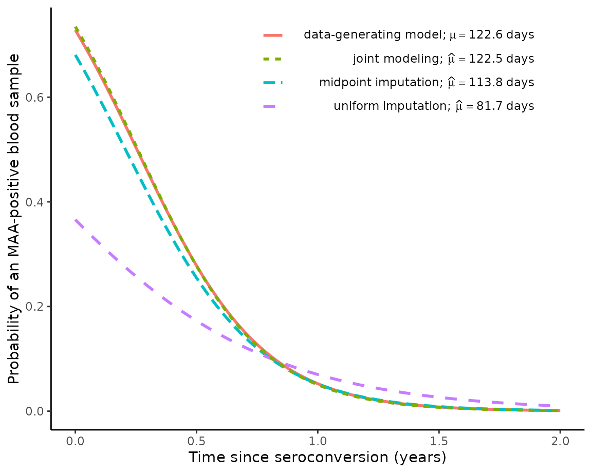

This vignette shows how to generate a simulated data set and analyze it using the model and estimation algorithm described in “Regression with Interval-Censored Covariates: Application to Cross-Sectional Incidence Estimation” by Morrison, Laeyendecker, and Brookmeyer (2021) in Biometrics: https://onlinelibrary.wiley.com/doi/10.1111/biom.13472.
First, we simulate some data:
set.seed(1)
library(rwicc)
library(dplyr)
#>
#> Attaching package: 'dplyr'
#> The following objects are masked from 'package:stats':
#>
#> filter, lag
#> The following objects are masked from 'package:base':
#>
#> intersect, setdiff, setequal, union
library(ggplot2)
theta_true = c(0.986, -3.88)
hazard_alpha = 1
hazard_beta = 0.5
sim_data = simulate_interval_censoring(
"theta" = theta_true,
"study_cohort_size" = 4500,
"preconversion_interval_length" = 365,
"hazard_alpha" = hazard_alpha,
"hazard_beta" = hazard_beta
)
# extract the participant-level and observation-level simulated data:
sim_participant_data = sim_data$pt_data
sim_obs_data = sim_data$obs_dataHere’s a look at the first few rows of participant-level data:
| ID | E | L | R | S |
|---|---|---|---|---|
| 1 | 2001-06-16 | 2001-06-16 | 2002-06-17 | 2002-03-11 |
| 2 | 2001-05-09 | 2001-05-09 | 2002-05-06 | 2001-05-18 |
| 3 | 2001-10-26 | 2001-10-26 | 2002-10-30 | 2002-02-18 |
| 4 | 2001-09-27 | 2001-09-27 | 2002-09-25 | 2002-01-08 |
| 5 | 2001-07-06 | 2001-07-06 | 2002-06-29 | 2002-04-23 |
| 6 | 2001-11-03 | 2001-11-03 | 2002-11-02 | 2002-06-01 |
-
Eis the individual’s enrollment date -
Lis the date of the last HIV-negative test -
Ris the date of the first HIV-positive test
We can count the number of individuals whose censoring windows overlap with each day like so:
sim_participant_data |>
mutate("Stratum" = 1) |>
build_event_date_possibilities_table(bin_width = 1) |>
dplyr::count(S) |>
ggplot(
aes(x = S, y = n)
) +
geom_line(alpha = .5) +
theme_classic()
Next, let’s look at the first few rows of observation-level (longitudinal) data:
| ID | E | O | Y | S | MAA status | Obs ID |
|---|---|---|---|---|---|---|
| 1 | 2001-06-16 | 2002-06-17 | 1 | 2002-03-11 | MAA+ | 1 |
| 1 | 2001-06-16 | 2002-07-15 | 0 | 2002-03-11 | MAA- | 2 |
| 1 | 2001-06-16 | 2002-08-12 | 1 | 2002-03-11 | MAA+ | 3 |
| 1 | 2001-06-16 | 2002-09-09 | 0 | 2002-03-11 | MAA- | 4 |
| 1 | 2001-06-16 | 2002-12-02 | 0 | 2002-03-11 | MAA- | 5 |
| 1 | 2001-06-16 | 2003-02-24 | 0 | 2002-03-11 | MAA- | 6 |
-
Ois the observation date -
Yis the MAA classification (1 = “recent infection”, 0 = “long-term infection”)
The two tables are linked by the variable ID.
We can visualize the data:
sim_data |>
plot_censoring_data(
included_IDs = 1:10,
labelled_IDs = NULL,
# xmax = lubridate::ymd("2003-01-01"),
s_vjust = -1
) +
theme(axis.ticks.y = element_blank())
Now, we will apply our proposed analysis (this takes a couple of
minutes; use argument verbose = TRUE to print progress
messages):
EM_algorithm_outputs = fit_joint_model(
obs_level_data = sim_obs_data,
participant_level_data = sim_participant_data,
bin_width = 7,
EM_max_iterations = 150,
verbose = FALSE)The output of fit_joint_model() is a list with several
components:
names(EM_algorithm_outputs)
#> [1] "Theta" "Mu" "Omega"
#> [4] "converged" "iterations" "convergence_metrics"
#> [7] "convergence_stats"Theta is the vector of estimated logistic regression
coefficients for
(intercept and slope):
pander(EM_algorithm_outputs$Theta)| (Intercept) | T |
|---|---|
| 1.019 | -3.953 |
Mu is the corresponding
estimate:
mu_est_EM = EM_algorithm_outputs$Mu
print(mu_est_EM)
#> [1] 122.5193Omega is the corresponding
estimate:
omega_est_EM <- EM_algorithm_outputs$Omega
omega_est_EM |> graph_omega()
converged indicates whether the algorithm reached its
convergence criterion (= 1 if converged, = 0 if not).
EM_algorithm_outputs$converged
#> [1] 1iterations is the number of EM iterations that the
algorithm performed:
EM_algorithm_outputs$iterations
#> [1] 112convergence_metrics gives the values of all four metrics
that we might use to evaluate convergence:
-
diff logL: change in log-likelihood between iterations -
diff mu: change in -
max abs diff coefs: -
max abs rel diff coefs:
By default, the convergence criterion is: diff logL <
0.1 and max abs rel diff coefs < 0.0001.
pander(EM_algorithm_outputs$convergence_metrics)| diff logL | diff mu | max abs diff coefs | max abs rel diff coefs |
|---|---|---|---|
| 0.008769 | 0.008171 | 0.0001012 | 9.931e-05 |
Next, we perform an alternative analysis using midpoint imputation:
theta_est_midpoint = fit_midpoint_model(
obs_level_data = sim_obs_data,
participant_level_data = sim_participant_data
)
pander(theta_est_midpoint)| (Intercept) | T_midpoint |
|---|---|
| 0.7572 | -3.662 |
Here, we perform an alternative analysis using uniform imputation:
# uniform imputation:
theta_est_uniform = fit_uniform_model(
obs_level_data = sim_obs_data,
participant_level_data = sim_participant_data
)
pander(theta_est_uniform)| theta0 | theta1 |
|---|---|
| -0.549 | -2.037 |
Now, let’s graph the results. First, let’s plot the true and estimated CDFs for the distribution of seroconversion date, for individuals who enroll on the first calendar day of the cohort study:
plot1 = plot_CDF(
true_hazard_alpha = hazard_alpha,
true_hazard_beta = hazard_beta,
omega_hat = EM_algorithm_outputs$Omega)
print(plot1)
We can see that our joint modeling approach hasn’t estimated this distribution very accurately for this particular simulated dataset. Nevertheless, the next graph will show us that the joint model very accurately estimates the true distribution and the true value of :
plot2 = plot_phi_curves(
theta_true = theta_true,
theta.hat_uniform = theta_est_uniform,
theta.hat_midpoint = theta_est_midpoint,
theta.hat_joint = EM_algorithm_outputs$Theta)
print(plot2)